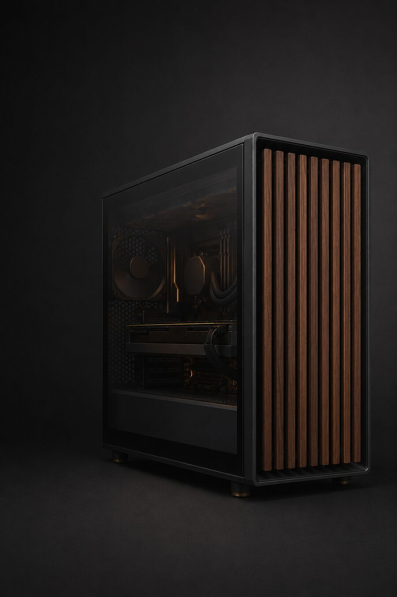

NUESTRO HARDWARE
Tres equipos.
Dos personas y una historia.
Los dos PC de Sue y el equipo de Javi, separados con claridad para comparar componentes, reutilizaciones y mejoras sin perder el historial.
- EQUIPOS
- 3 PC
- PROPIETARIOS
- Sue · Javi
- PERIODO
- 2015–2026

PC 3 · JAVIRTX 5070 Ti
TRES CONFIGURACIONES, UN MISMO HOGAR